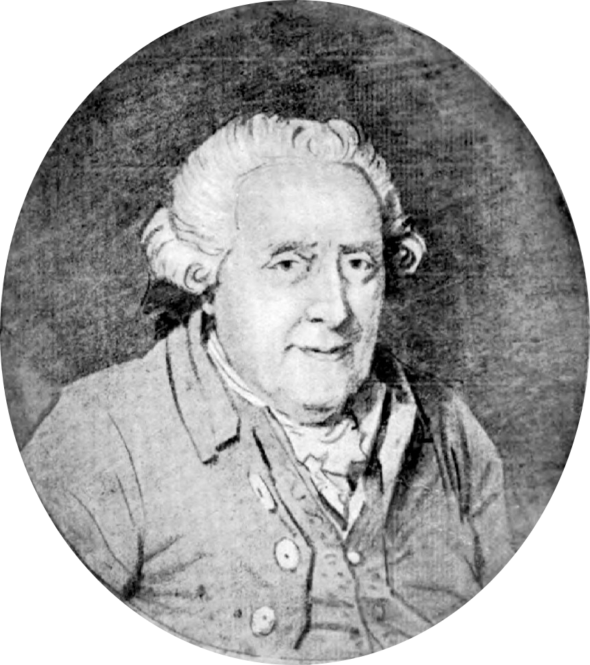
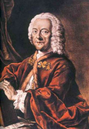

...
J. S. Bach's Nework
Click on a node or an edge.
Double click on a node to open its Wikipedia page.
Johann Sebastian Bach

Wilhelm Friedemann Bach

Carl Philipp Emanuel Bach

Georg Friedrich Händel

Georg Philipp Telemann
Leopold von Anhalt-Köthen

Friedrich der Große